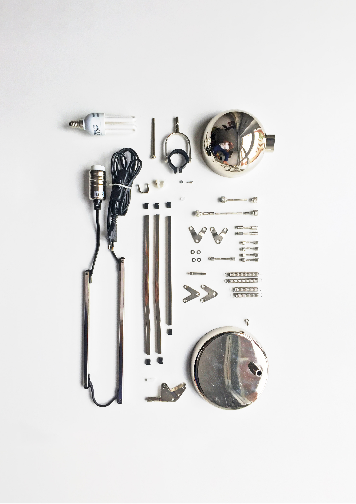
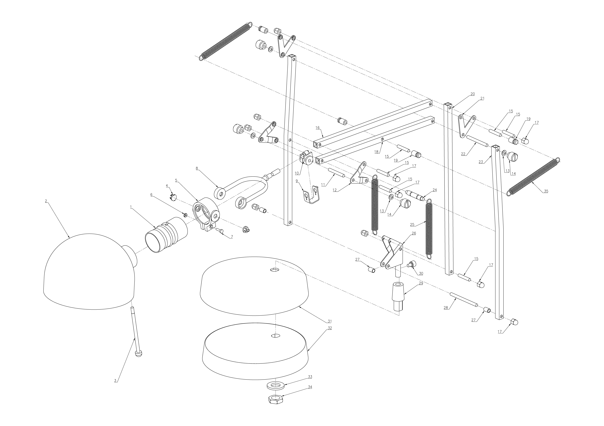

Capabilities and limitations of style transfer with CycleGANs for ring design automatic generation
WHEN? Spring 2021
WHO? Tomás Cabezón
WHY? Master Thesis
WHERE? UOC
Rendering programs have changed the design process completely as they permit to see how the products will look like before they are fabricated. However, the rendering process is complicated and takes a lot of time not only in the rendering itself but in the setting of the scene as well. Materials, lights and cameras need to be set in order to get the best quality results, nevertheless, the optimal output may not be obtained in the first render. This all makes the rendering process a tedious process.
Since Zhu et al. introduced Generative Adversarial Networks (GANs) in 2014, they have been used to obtain computer-generated data. From non-existing human faces to medical data analysis or image style transfer. GANs have been used to transfer image textures from one domain to another, but paired data was needed. When this same group introduced the CycleGANs, this all changed. CycleGANs allow transforming one image from one domain to another, without the need of paired data.
This Work studies the possibilities of CycleGANs on style transfer from an initial sketch to a final render. A process that is crucial in the automatic generation of ring designs as allows the costumer to see the final products before buying.
The present Work sets a basis for future research, showing the possibilities of GANs in design and establishing a starting point for new applications.

